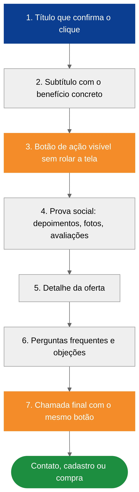
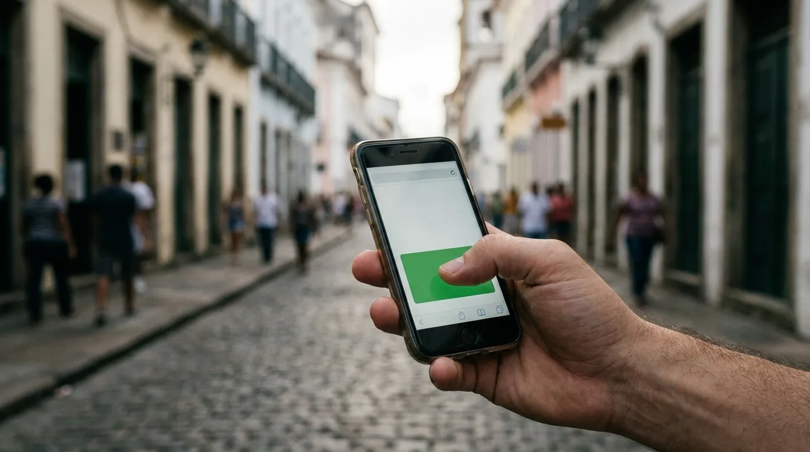

Landing Page: O que É, Exemplos e Quando Usar
Você anuncia no Google, alguém clica e cai na página inicial do seu site. Ali tem menu, história da empresa, seis serviços, blog, galeria de fotos. A pessoa procurava uma coisa só, não acha em dez segundos e volta para o resultado da busca. Você pagou pelo clique e não levou nada.
A landing page existe para resolver esse problema. É uma página construída em volta de uma única oferta e de uma única ação, sem nada que puxe o visitante para outro lugar.
Este guia explica o que é landing page e como ela se diferencia de um site. Mostra também os tipos e exemplos mais comuns, a estrutura que costuma converter e em que situação ela vale mais do que um site completo.
O que é landing page e para que ela serve
Landing page, ou página de destino, é uma página da internet criada para levar o visitante a fazer uma ação específica. Pode ser pedir um orçamento, chamar no WhatsApp, baixar um material, se inscrever num evento ou comprar um produto.
O nome vem do inglês "to land", pousar. É a página onde a pessoa pousa depois de clicar num anúncio, num link de e-mail ou numa publicação de rede social.
Três características separam essa página de uma página qualquer:
- Tem um objetivo só. Tudo que está nela empurra para a mesma ação.
- Não tem saídas. Normalmente não há menu de navegação nem links para outras páginas do site. Cada link extra é uma porta por onde o visitante pode ir embora.
- Conversa com a origem do clique. Se o anúncio falava de "instalação de ar-condicionado em BH", a página abre falando exatamente disso, e não da empresa em geral.
Uma comparação ajuda. O site é a loja inteira, com vitrine, corredores e seções. A página de destino é o balcão de um produto só, com o vendedor já esperando. Quem entra na loja passeia. Quem chega ao balcão veio para resolver uma coisa.
Conversão, em uma linha: é quando o visitante faz a ação que você queria. Se cem pessoas entram na página e oito pedem orçamento, a taxa de conversão é de 8%. Toda página de destino é medida por esse número.
Landing page ou site: qual é a diferença na prática
A dúvida aparece em quase toda conversa com cliente. A resposta curta: o site apresenta a empresa, e a página de destino vende uma coisa de cada vez. Um não substitui o outro na maioria dos negócios.
| Critério | Landing page | Site institucional |
|---|---|---|
| Objetivo | Uma ação (contato, cadastro, compra) | Apresentar a empresa e todos os serviços |
| Número de páginas | Uma | Várias (em geral de 5 a 8) |
| Menu de navegação | Normalmente não tem | Tem, é essencial |
| De onde vem o visitante | Anúncio, e-mail, campanha | Busca orgânica, indicação, redes sociais |
| Tempo de criação | De uma a duas semanas | De três a seis semanas |
| Faixa de preço (criação) | R$ 800 a R$ 2.500 | R$ 2.500 a R$ 8.000 |
| Força no Google sem anúncio (orgânico) | Limitada, por ser uma página só | Maior, porque cobre vários assuntos |
| Melhor para | Campanha, lançamento, serviço específico | Credibilidade e presença de longo prazo |
Os valores são a referência de mercado que a gente observa em 2026 e estão detalhados no artigo sobre quanto custa um site. Se você quer entender melhor o outro lado da tabela, o texto sobre o que é site institucional mostra o que um bom site precisa ter.
Repare numa linha da tabela: a força no Google orgânico. Uma página única raramente aparece bem posicionada no Google para muitas buscas, porque ela é focada num assunto só. O papel dela é transformar em contato as visitas que você já trouxe, principalmente as que vieram de anúncio. Por isso a combinação mais comum nos negócios que atendemos é site para presença e landing page para campanha.
Os tipos de landing page e exemplos por negócio
Nem toda página de destino pede a mesma coisa ao visitante. O tipo muda conforme o que você oferece e o quanto a pessoa precisa confiar em você antes de agir.
Página de captura de contato
É a mais comum entre prestadores de serviço. O visitante deixa nome e telefone, ou clica direto para o WhatsApp, e a equipe comercial faz o resto.
Exemplos: clínica odontológica anunciando implante, escritório de contabilidade oferecendo abertura de empresa, empresa de energia solar oferecendo simulação de economia.
Página de material gratuito
Aqui a troca é explícita: você entrega um e-book, uma planilha ou um checklist, e a pessoa entrega o e-mail. Funciona bem quando o ciclo de venda é longo e o cliente ainda está pesquisando. É a porta de entrada clássica de um funil de vendas.
Exemplos: guia de reforma para quem vai comprar apartamento na planta, planilha de fluxo de caixa para pequeno comércio.
Página de venda direta
Vende um produto ou curso na própria página, com botão de compra. Costuma ser mais longa, porque precisa responder a todas as objeções antes do pagamento.
Exemplos: curso online, ingresso de evento, kit de produtos com preço fechado.
Página de evento ou inscrição
Data, local, programação e botão de inscrição. Simples, com prazo claro.
Exemplos: workshop presencial, webinar, feira do setor.
Página de lista de espera ou pré-lançamento
Usada para medir interesse antes de investir pesado em um produto novo. É a forma mais barata de validar uma ideia, e a lógica é a mesma de um MVP: testar com gente real antes de construir tudo.
Exemplos: aplicativo em desenvolvimento, nova unidade de uma franquia, coleção que ainda vai ser lançada.
Se você já sabe qual desses tipos serve ao seu negócio e quer uma página pronta para receber anúncio, fale com a equipe da Drive Digital. A gente monta a página já com medição de conversão instalada.
A estrutura de uma landing page que converte
Existe um esqueleto que aparece na maioria das páginas que dão resultado. Ele não é regra rígida, mas cada bloco tem uma função, e pular algum costuma custar conversão.

1. Título que confirma o clique
A primeira frase precisa dizer ao visitante que ele chegou ao lugar certo. Se o anúncio prometia "limpeza de sofá em domicílio", o título repete a promessa. O visitante decide ficar ou sair em poucos segundos, e o título é quase tudo que ele lê nesse tempo.
2. Subtítulo com o benefício concreto
Logo abaixo, uma frase que explica o ganho: prazo, economia, resultado. "Atendimento no mesmo dia em toda a região metropolitana" diz mais do que "qualidade e compromisso".
3. Chamada para ação visível sem rolar a tela
O botão principal aparece já na primeira dobra, que é a parte da página visível antes de rolar. O texto do botão descreve a ação: "Pedir orçamento pelo WhatsApp" funciona melhor do que "Enviar".
4. Prova de que você existe e entrega
Depoimentos com nome, fotos de trabalhos reais, número de clientes atendidos, avaliações do Google, selos de certificação. Quem não conhece a sua marca precisa de motivo para confiar, e a prova social faz esse trabalho.
5. Detalhe da oferta
O que está incluído, como funciona, quanto tempo leva. Aqui entram listas curtas e, se fizer sentido, uma tabela comparando planos.
6. Respostas para as objeções
Uma seção de perguntas frequentes resolve as dúvidas que travam a decisão: preço, prazo, garantia, forma de pagamento, área de atendimento.
7. Chamada final
O mesmo botão do topo, repetido no fim, para quem leu tudo e decidiu agir.
Dica de quem monta essas páginas toda semana: o formulário pede o mínimo possível. Cada campo extra derruba a taxa de conversão. Nome e WhatsApp resolvem a maior parte dos casos, e o resto a equipe comercial pergunta na conversa.
O que faz uma landing page de alta conversão
A estrutura é o ponto de partida. O que separa uma página mediana de uma que realmente enche a agenda são detalhes de execução, e quase todos são técnicos, de texto ou de usabilidade, não de estética.
Velocidade
Página lenta perde visitante antes mesmo de carregar. No celular, com 4G oscilando, cada segundo a mais pesa. Você pode medir a sua página de graça no PageSpeed Insights, a ferramenta do próprio Google. Imagens pesadas, vídeo que carrega sozinho e excesso de complementos instalados no site (plugins) são os culpados mais frequentes.
Pensada primeiro para o celular
A maioria dos cliques de anúncio em negócios locais vem do celular. Então a página precisa ser desenhada para a tela pequena. Isso significa botão grande o bastante para o polegar, texto legível sem zoom e formulário que não obriga a pessoa a pular de um campo para outro.
Relevância que barateia o clique
Além de segurar o visitante, a coerência entre anúncio e página pesa no bolso. No Google Ads, a experiência na página de destino é um dos componentes do Índice de Qualidade, a nota que o Google dá a cada palavra-chave. Página relevante para o que a pessoa buscou tende a melhorar essa nota, e nota melhor costuma significar clique mais barato. Ou seja, a página bem feita também reduz o custo da campanha. O artigo sobre quanto custa tráfego pago mostra como esse custo se forma.
Medição instalada antes do primeiro anúncio
Sem rastreamento, você sabe quantas pessoas visitaram a página, mas não quantas viraram contato nem de qual anúncio elas vieram. Os códigos de medição do Google Ads (a tag de conversão) e da Meta (o pixel), que avisam a plataforma cada vez que alguém vira contato, precisam estar funcionando antes de a campanha começar. Parece óbvio, e mesmo assim é um dos erros que mais vemos em contas que chegam para a gente.
Uma página por oferta
Se você vende três serviços diferentes, o ideal são três landing pages, cada uma falando com um público. Uma página tentando vender tudo para todo mundo acaba não convencendo ninguém.
| Problema comum | Efeito na conversão | Como corrigir |
|---|---|---|
| Título genérico ("Bem-vindo à nossa empresa") | Visitante não confirma que está no lugar certo | Repetir a promessa do anúncio no título |
| Formulário com 8 campos | Abandono no meio do preenchimento | Pedir só nome e WhatsApp |
| Página demora mais de 4 segundos no celular | Parte dos visitantes sai antes de ver a oferta | Comprimir imagens, tirar vídeo automático |
| Menu com links para o site todo | Visitante se distrai e não volta | Remover a navegação da página |
| Nenhuma prova social | Desconfiança de quem não conhece a marca | Depoimentos, fotos reais, avaliações |
| Botão escrito "Enviar" | Ação pouco clara | Texto que descreve o resultado ("Quero meu orçamento") |
Quando usar uma landing page (e quando não usar)
Esse formato não é a resposta para tudo. Ele brilha em algumas situações e decepciona em outras.
Use quando
Você vai investir em anúncio. É o caso mais forte. Mandar tráfego pago para a página inicial desperdiça parte do investimento, e isso vale para as duas plataformas, como explicamos no comparativo entre Google Ads ou Meta Ads.
Você tem uma oferta específica e com prazo. Promoção, lançamento, turma nova de curso, evento.
Você quer testar uma ideia antes de investir mais. Uma página e um orçamento pequeno de mídia mostram em poucas semanas se existe procura, mesmo antes de o custo por contato estar otimizado.
Seu negócio vende um serviço principal. Um profissional autônomo que faz uma coisa só pode começar com uma página bem feita e crescer para um site depois.
Não use quando
O objetivo é aparecer no Google sem pagar anúncio. Para isso você precisa de um site com várias páginas e conteúdo, trabalhado com SEO, que é o trabalho de posicionar o site nos resultados gratuitos do Google. Uma página só não cobre as buscas que o seu cliente faz.
Você vende muitos produtos. Catálogo grande pede loja virtual.
Você precisa transmitir a história e a estrutura da empresa. Grandes contratos entre empresas, em que o comprador pesquisa o fornecedor a fundo antes de ligar, pedem site institucional completo. A página de campanha pode entrar depois.
Resumo prático: se o visitante chega por um anúncio e você quer que ele faça uma coisa só, use landing page. Se ele chega pela busca orgânica e precisa conhecer a empresa, use o site. A maioria dos negócios acaba usando os dois.

Como criar uma landing page: ferramenta pronta ou sob medida
Existem dois caminhos, e cada um faz sentido num momento.
Ferramentas de arrastar e soltar. Plataformas como RD Station, Elementor, Wix e outras permitem montar uma página sem programar. Servem para testes rápidos e para quem tem tempo de aprender. O limite aparece na velocidade, na personalização e na ligação com as ferramentas que você já usa para vender.
Página desenvolvida por uma equipe. Texto escrito para a sua oferta, design pensado para o celular, carregamento rápido, medição instalada e ligação com o seu CRM (o sistema onde você registra contatos e vendas) ou com o WhatsApp. Custa mais no começo, e em troca a página já nasce pronta para receber investimento em mídia.
A escolha depende do que está em jogo. Se você vai colocar R$ 200 num teste, uma ferramenta pronta resolve. Se vai investir alguns milhares de reais por mês em anúncio, a página é onde esse dinheiro vira contato ou se perde, e economizar nela costuma sair caro.
Na Drive Digital, a criação de landing pages já inclui o texto, um design que se ajusta ao celular, a medição de conversão e o botão de WhatsApp integrado. Se você está planejando uma campanha, conte para a gente o que quer vender e montamos a página certa para ela.
O passo a passo, de qualquer forma
- Defina uma oferta e uma ação.
- Escreva o título repetindo a promessa do anúncio.
- Reúna as provas: depoimentos, fotos, números.
- Monte a página seguindo a estrutura descrita acima: título, subtítulo, botão, provas, oferta, objeções e chamada final.
- Teste no celular, em conexão lenta.
- Instale a medição de conversão e teste com um contato de verdade.
- Só então ligue o anúncio.
- Depois de algumas semanas, troque um elemento por vez (título, botão, imagem) e compare os resultados.
Perguntas frequentes sobre landing page
O que é landing page? Landing page é uma página criada para levar o visitante a uma única ação, como pedir orçamento, chamar no WhatsApp ou baixar um material. Ela normalmente não tem menu de navegação e conversa diretamente com o anúncio ou link que trouxe a pessoa até ali.
Qual a diferença entre landing page e site? O site apresenta a empresa inteira, com várias páginas e menu. A landing page foca numa oferta só e numa ação só. O site é melhor para presença e busca orgânica, e a landing page é melhor para converter tráfego de anúncio.
Quanto custa uma landing page? No Brasil, em 2026, uma landing page profissional costuma custar entre R$ 800 e R$ 2.500 na criação. O valor sobe quando a página precisa de texto persuasivo mais longo, integrações com CRM ou automações, ou design totalmente exclusivo.
Landing page aparece no Google? Pode aparecer, mas raramente rankeia bem para muitas buscas, porque é uma página só, focada numa oferta. O papel principal dela é converter o tráfego que já chega por anúncio, e-mail ou rede social.
Qual é uma boa taxa de conversão para landing page? Varia muito por nicho e pela origem do tráfego. Para serviços locais com tráfego pago bem segmentado, taxas entre 5% e 10% são comuns, e algumas páginas passam disso. Mais importante que comparar com a média do mercado é acompanhar a sua própria taxa e testar melhorias uma de cada vez.
Uma página, uma oferta, uma ação
A página de destino é a peça que transforma clique em contato. Ela funciona porque tira do caminho tudo que não ajuda o visitante a decidir: menu, distrações, textos genéricos. O que sobra é a oferta, a prova e o botão.
Se você está anunciando e mandando as pessoas para a página inicial do site, provavelmente está pagando por cliques que poderiam render mais. E se ainda nem anuncia, uma página simples com um orçamento pequeno de mídia é um jeito barato de testar se a sua oferta tem demanda.
A Drive Digital cria a página, instala a medição e, se você quiser, cuida também dos anúncios que levam gente até ela. Fale com a nossa equipe e conte qual oferta você quer colocar na frente do cliente.